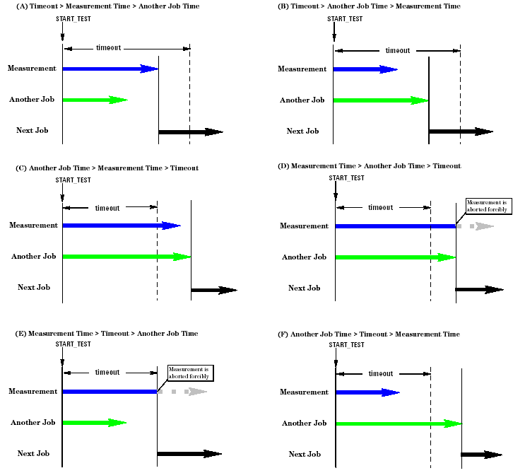

Executing an AC Test
To execute an AC test, use the following APIs according to the test type.
Test Type |
Test Method API |
|---|---|
AC measurement test |
EXECUTE_TEST or START_TEST and WAIT_TEST_DONE |
Digital capture test |
DIGITAL_CAPTURE_TEST, NB_DIGITAL_CAPTURE_START or NB_DIGITAL_CAPTURE_END |
Digital functional test |
FUNCTIONAL_TEST |
This section describes how to execute an AC test using these APIs.
- Executing an AC measurement test
To execute an AC test using the setup data downloaded to the hardware, you can use the following API.
EXECUTE_TEST(...);
When this API is executed, the digital sequencer is started and the test starts.
You can set the timeout time for the test (or measurement). The timeout time is compared to the time from when the test was started. If the test time exceeds the timeout time, this API returns "1" to a variable of the timeout flag parameter, and the program execution goes to the next statement.
Example:
EXECUTE_TEST(0.1 sec, &timeout_flag);
Instead of the EXECUTE_TEST API, you can use the START_TEST and WAIT_TEST_DONE APIs as follows:
START_TEST(); WAIT_TEST_DONE(timeout, &timeout_flg);
START_TEST starts the digital sequencer at the specified start label, that is, changes the state of the digital sequencer from "BRK" to "RUN". Then the program execution goes to the next statement.
WAIT_TEST_DONE pauses the program execution until the digital sequencer and all the analog module's sequencers (except the AWG sequencers) stop.
For details, see EXECUTE_TEST, START_TEST and WAIT_TEST_DONE.
The advantage of the pair of the START_TEST and WAIT_TEST_DONE APIs is that the workstation can execute another job while the tester hardware is performing the test. To execute another job during a test, you have to write statements for the job such as calculation of data between the START_TEST and WAIT_TEST_DONE APIs as follows:
START_TEST(); : //Another Job Statements : WAIT_TEST_DONE(1.0 s, &flg); //Timeout time = 1.0secThe figure below shows the relationship of the test time (or measurement time), the timeout time, and the execution time of another job.
- Executing a digital capture test
To execute a digital capture test using the setup data downloaded to the hardware, you can use the following APIs:
DIGITAL_CAPTURE_TEST(); NB_DIGITAL_CAPTURE_START(); and NB_DIGITAL_CAPTURE_END();
If you attempt to execute a test containing digital capturing by the EXECUTE_TEST API, the test cannot be done. For details, see the DIGITAL_CAPTURE_TEST or NB_DIGITAL_CAPTURE_START.
Note that you cannot perform another job during the measurement if you execute a test containing digital capturing using the DIGITAL_CAPTURE_TEST(); API. However, the NB_DIGITAL_CAPTURE_START(); and NB_DIGITAL_CAPTURE_END(timeout); APIs allow communication with analog instrumentation during a digital capture test.
- Executing a digital functional test
To execute a digital functional test using the setup data downloaded to the hardware, you can use the FUNCTIONAL_TEST API. This API activates the digital primaries before executing the test. For details, see FUNCTIONAL_TEST.
If you perform a functional test where an analog module is also used, put the FLUSH API to activate the primary analog set and routing connections before the FUNCTIONAL_TEST API. In this case, statements for enabling the analog module trigger signal input and making routing connections are required before the FLUSH API.
To retrieve the functional test result, you can use the GET_FUNCTIONAL_RESULT API.
Note In the figure below, it is assumed that the flag parameter is set with the WAIT_TEST_DONE API. If the flag parameter is not set, the program execution will be aborted when timeout occurs. For details of this topic, see WAIT_TEST_DONE.

Functional changes
- Introduced before SmarTest 6.3.2